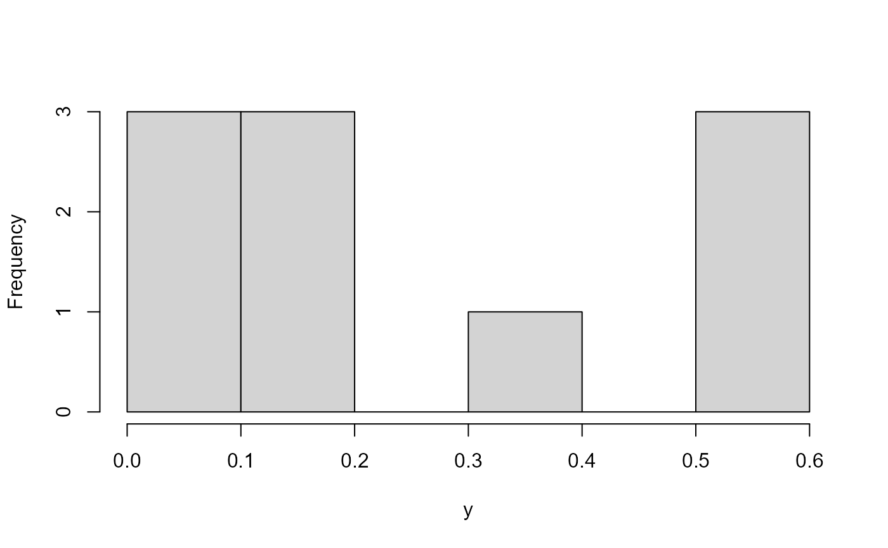

Latin Hypercube Samples - Questions
Rob Carnell
2024-06-30
Source:vignettes/lhs_faq.Rmd
lhs_faq.RmdQuestion 1
I am looking for a package which gives me Latin hypercube samples from a grid of values:
a <- (1:10)
b <- (20:30)
dataGrid <- expand.grid(a, b)Answer
The lhs package returns a uniformly distributed
stratified sample from the unit hypercube. The marginal distributions
can then be transformed to your distribution of choice. If you wanted a
uniform Latin hypercube on [1,10] and [20,30] with 22 samples, you could
do:
X <- randomLHS(22, 2)
X[,1] <- 1 + 9*X[,1]
X[,2] <- 20 + 10*X[,2]
# OR
Y <- randomLHS(22, 2)
Y[,1] <- qunif(Y[,1], 1, 10)
Y[,2] <- qunif(Y[,2], 20, 30)
head(X)
#> [,1] [,2]
#> [1,] 9.360227 21.96763
#> [2,] 4.808267 28.84202
#> [3,] 1.960651 27.97779
#> [4,] 7.200957 21.79375
#> [5,] 1.200379 28.40089
#> [6,] 4.091125 24.84824
head(Y)
#> [,1] [,2]
#> [1,] 8.284968 29.24988
#> [2,] 5.525437 28.53956
#> [3,] 8.981331 27.07328
#> [4,] 2.887880 23.40239
#> [5,] 1.730310 29.07440
#> [6,] 7.708760 27.45095If you want integers only in the sample, then you can use
qinteger.
Question 2
I am trying to do a Latin hypercube Sampling (LHS) to a 5-parameter design matrix. I want the combination of the first three parameters to sum up to 1 (which obviously do not)
If I divide each of these parameters with the sum, the uniform distribution is lost. Is there a way to maintain the random LHS (with uniformly distributed parameters) so that the referred condition is fulfilled?
Answer
In my experience with Latin hypercube samples, most people draw the
sample on a uniform hypercube and then transform the uniform cube to
have new distributions on the margins. The transformed distributions are
not necessarily uniform. It is possible to draw a Latin hypercube with
correlated margins and have them sum to one using
qdirichlet, but they will not be uniform. I’ll make a quick
example argument that explains the difficulty…
In two dimensions, you could draw this which is uniform and correlated.
hist(x, main = "") 
hist(y, main = "") 
But in three dimensions, it is hard to maintain uniformity because large samples on the first uniform margin overweight the small samples on the other margins.
hist(y, main = "") 
hist(z, main = "") 
The transformed distributions maintain their “Latin” properties, but are in the form of new distributions. The Dirichlet distribution is built for this purpose.
N <- 1000
x <- randomLHS(N, 5)
y <- x
y[,1:3] <- qdirichlet(x[,1:3], c(1, 1, 1))
y[,4] <- x[,4]
y[,5] <- x[,5]
par(mfrow = c(2,3))
dummy <- apply(x, 2, hist, main = "")
par(mfrow = c(2,3)) 

The uniform properties are gone as you can see here…

pairs(y, col = "red") Question 3
How do I create a Latin hypercube that ranges between between 0 and 1 and sums to 1?
Answer
I have a solution to this problem using a Dirichlet
distribution.
The result is not uniformly distributed on (0,1) anymore, but instead is
Dirichlet distributed with the parameters alpha. The Latin properties
are maintained.
Question 5
I need to use Latin hypercube sampling for my own custom functions.
Answer
require(lhs)
# functions you described
T1 <- function(t) t*t
WL1 <- function(T1, t) T1*t
BE1 <- function(WL1, T1, t) WL1*T1*t
# t is distributed according to some pdf (e.g. normal)
# draw a lhs with 512 rows and 3 columns (one for each function)
y <- randomLHS(512, 3)
# transform the three columns to a normal distribution (these could be any
# distribution)
t <- apply(y, 2, function(columny) qnorm(columny, 2, 1))
# transform t using the functions provided
result <- cbind(
T1(t[,1]),
WL1(T1(t[,2]), t[,2]),
BE1(WL1(T1(t[,3]), t[,3]), T1(t[,3]), t[,3])
)
# check the results
# these should be approximately uniform
par(mfrow = c(2,2))
dummy <- apply(y, 2, hist, breaks = 50, main = "")
# these should be approximately normal
par(mfrow = c(2,2)) 
dummy <- apply(t, 2, hist, breaks = 50, main = "")
# these should be the results of the functions
par(mfrow = c(2,2)) 
dummy <- apply(result, 2, hist, breaks = 50, main = "") 
Question 6
I need a Latin hypercube sample on an integer set or a set of colors.
Answer
N <- 1000
x <- randomLHS(N, 4)
y <- as.data.frame(x)
# uniform integers on 1-10
y[,1] <- qinteger(x[,1], 1, 10)
# three colors 1,2,3
y[,2] <- qfactor(x[,2], factor(c("R", "G", "B")))
# other distributions
y[,3] <- qunif(x[,3], 5, 10)
y[,4] <- qnorm(x[,4], 0, 2)
table(y[,1])
#>
#> 1 2 3 4 5 6 7 8 9 10
#> 100 100 100 100 100 100 100 100 100 100
table(y[,2])
#>
#> B G R
#> 334 333 333
hist(y[,3], main="") 
hist(y[,4], main="")